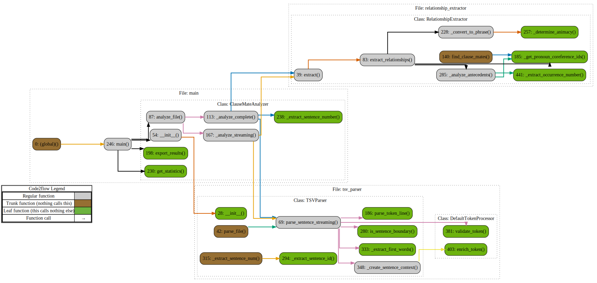

System Architecture
This document provides a detailed overview of the system's architecture, data models, and runtime data flow. The diagrams herein are generated using a combination of manual and automated techniques to ensure they are both descriptive and maintainable.
1. High-Level Component Diagram
This diagram illustrates the major components of the project and their primary interactions. It provides a "bird's-eye view" of the repository's structure.
graph TD
subgraph "Input & Output"
A["📄 Raw TSV Data
(data/input/)"]
Z["📊 Final CSV Report
(data/output/)"]
end
subgraph "Application Core (src/)"
B["Orchestrator
(main.py, run_phase2.py)"]
C["Shared Configuration
(config.py)"]
D["Shared Data Models
(data/models.py)"]
subgraph "Core Pipeline"
direction LR
P1["1. Parsers
(parsers/)"]
P2["2. Extractors
(extractors/)"]
P3["3. Analyzers
(analyzers/)"]
end
end
subgraph "Development & Analysis Tooling"
T1["Nox & Pre-commit
(noxfile.py, .pre-commit-config.yaml)"]
T2["CI/CD Workflow
(.github/workflows/pylint.yml)"]
T3["Analysis Scripts
(tools/)"]
end
%% Data Flow
A -- "Reads raw text" --> P1
P1 -- "Creates List<Token>" --> P2
P2 -- "Creates List<ClauseMateRelationship>" --> P3
P3 -- "Enriches relationships" --> B
B -- "Writes to disk" --> Z
%% Component Dependencies
B -- "Uses" --> C
B -- "Coordinates" --> P1
B -- "Coordinates" --> P2
B -- "Coordinates" --> P3
P1 -- "Uses" --> D
P2 -- "Uses" --> D
P3 -- "Uses" --> D
T3 -- "Analyzes" --> Z
2. Core Data Models (UML Class Diagram)
This diagram shows the primary data structures defined in src/data/models.py and their relationships. These models are the backbone of the application, ensuring type safety and clear data contracts between components.
classDiagram
class Token {
+idx: int
+text: str
+sentence_num: int
+grammatical_role: str
+thematic_role: str
+coreference_link: Optional[str]
+coreference_type: Optional[str]
}
class Phrase {
+text: str
+coreference_id: str
+start_idx: int
+end_idx: int
+grammatical_role: str
+thematic_role: str
+coreference_type: str
+animacy: AnimacyType
+givenness: str
}
class AntecedentInfo {
+most_recent_text: str
+most_recent_distance: str
+first_text: str
+first_distance: str
}
class ClauseMateRelationship {
+sentence_id: str
+sentence_num: int
+pronoun: Token
+clause_mate: Phrase
+num_clause_mates: int
+antecedent_info: AntecedentInfo
+to_dict(): Dict
}
class SentenceContext {
+sentence_id: str
+sentence_num: int
+tokens: List~Token~
+critical_pronouns: List~Token~
+coreference_phrases: List~CoreferencePhrase~
}
ClauseMateRelationship o-- "1" Token : has_pronoun
ClauseMateRelationship o-- "1" Phrase : has_clause_mate
ClauseMateRelationship o-- "1" AntecedentInfo : has_antecedent_info
SentenceContext o-- "*" Token : contains
3. Runtime Data Flow (Sequence Diagram)
This diagram illustrates the sequence of operations when the application is run. It shows how the main orchestrator coordinates the different pipeline components to process the input data and generate the final output.
sequenceDiagram
participant User
participant Orchestrator (main.py)
participant TSVParser (parsers/)
participant RelationshipExtractor (extractors/)
participant DistanceAnalyzer (analyzers/)
participant FileSystem
User->>Orchestrator: python src/run_phase2.py
Orchestrator->>FileSystem: Read TSV file
FileSystem-->>Orchestrator: Return file content
Orchestrator->>TSVParser: Parse(file_content)
TSVParser-->>Orchestrator: Return List~SentenceContext~
loop For each SentenceContext
Orchestrator->>RelationshipExtractor: Extract(sentence_context)
RelationshipExtractor-->>Orchestrator: Return List~ClauseMateRelationship~
end
loop For each ClauseMateRelationship
Orchestrator->>DistanceAnalyzer: Analyze(relationship)
DistanceAnalyzer-->>Orchestrator: Return enriched_relationship
end
Orchestrator->>FileSystem: Write enriched relationships to CSV
FileSystem-->>Orchestrator: Confirm write
Orchestrator-->>User: Process complete
4. Code-Level Flowchart (Generated)
This diagram provides a more granular, code-level view of the project's execution flow. It is automatically generated from the source code using the code2flow tool, showing the call relationships between functions and classes.

5. Diagram Generation and Rendering
This architecture document is a living document, designed to be updated as the codebase evolves. The diagrams are generated using specific tools that translate text-based definitions or source code into visuals. This approach, often called "Diagrams as Code," makes the documentation easy to version control and maintain.
A Python script, tools/render_arch_doc.py, automates the process of converting this Markdown file into a standalone HTML document with fully rendered diagrams.
5.1. Manually Created Diagrams (Mermaid.js)
The High-Level Component Diagram, Core Data Models (UML), and Runtime Data Flow (Sequence Diagram) are created using Mermaid.js.
- What it is: Mermaid is a JavaScript-based tool that renders diagrams and charts from text in a syntax similar to Markdown.
- How to reproduce/update:
- Edit the
```mermaid ... ``` code blocks directly in this Markdown file.
- The syntax is well-documented on the Mermaid.js website.
- Many Markdown editors (like the one on GitHub or in VS Code with the Markdown Preview Mermaid Support extension) provide live previews.
- Run
python tools/render_arch_doc.py to see the changes in the final HTML.
5.2. Auto-Generated Diagram (code2flow & Graphviz)
The Code-Level Flowchart is generated automatically by analyzing the Python source code.
- What it is: The flowchart is a call graph that shows which functions and methods call each other. The graph's structure is defined using the DOT language, a plain text graph description language that is part of the Graphviz ecosystem.
- How to reproduce/update:
- The DOT graph definition inside the
```dot ... ``` block is generated by the code2flow Python package.
- To regenerate the DOT code after significant changes to the
src directory, you can run the following command:
bash
code2flow src/main.py src/parsers/tsv_parser.py src/extractors/relationship_extractor.py src/analyzers/base.py --output docs/project_flow.gv
- Copy the contents of the generated
docs/project_flow.gv file and paste it inside the ```dot ... ``` block in this file.
- Run
python tools/render_arch_doc.py to update the final HTML.
5.3. Final HTML Rendering Process
The tools/render_arch_doc.py script performs the following steps to create docs/ARCHITECTURE.html:
-
Reads ARCHITECTURE.md: The script starts by reading the raw Markdown content of this file.
-
Renders the DOT Graph:
- It finds the
dot code block.
- To avoid requiring a local installation of Graphviz, the script sends the DOT code to the
https://quickchart.io/graphviz web service.
- The service returns a Scalable Vector Graphic (SVG) of the flowchart, which is saved as
docs/project_flow.svg.
- The script then replaces the
```dot ... ``` block in the Markdown with an <img> tag pointing to the new SVG file.
-
Renders Mermaid Diagrams:
- The script uses the
markdown library with the markdown-mermaid extension. This wraps the Mermaid code blocks in the necessary HTML tags.
-
Assembles the Final HTML:
- The script converts the modified Markdown to an HTML body.
- It then wraps this body in a complete HTML structure and injects the Mermaid.js library from a CDN, which allows the browser to render the Mermaid diagrams.
5.4. How to Regenerate the Full HTML Document
If you make any changes to this ARCHITECTURE.md file, run the following command from the project root to regenerate the final HTML document:
bash
python tools/render_arch_doc.py
This will update docs/ARCHITECTURE.html with all the latest content and diagrams.